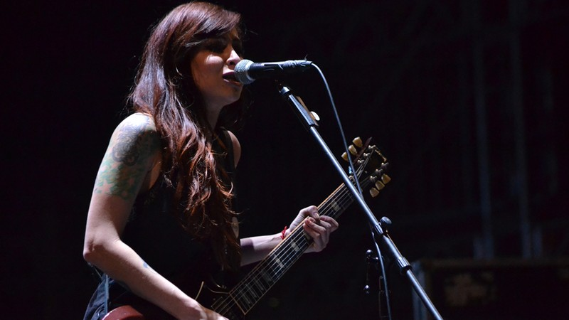
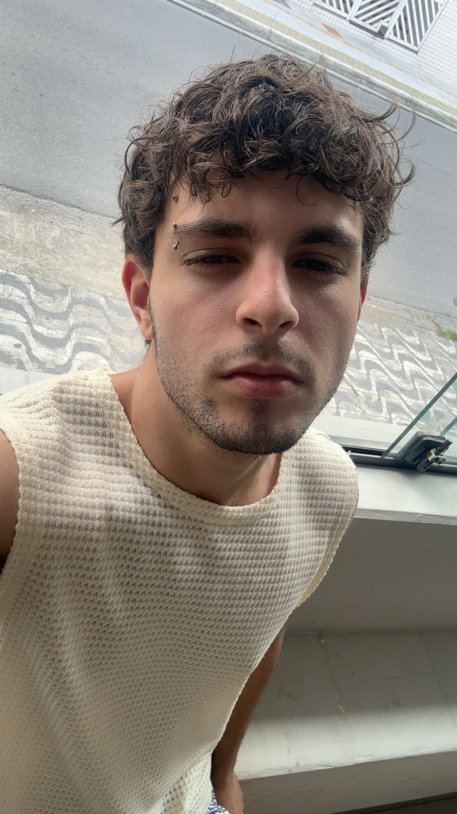
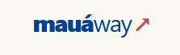

Pitty
Um site dedicado à cantora Pitty, reunindo uma experiência visual inspirada em sua trajetória e em sua identidade artística.
Acessar o projeto ↗Um espaço para apresentar um pouco sobre mim e compartilhar projetos que desenvolvi, ideias que transformei em experiências e trabalhos dos quais fiz parte.

Este portfólio reúne alguns dos projetos que desenvolvi durante minha trajetória de estudos. Cada trabalho representa uma oportunidade de experimentar ideias, aprender coisas novas e transformar conceitos em algo concreto.
Entre eles está o MauáWay, meu Trabalho de Conclusão de Curso, criado com a proposta de aproximar pessoas dos pontos turísticos e dos comércios locais de Mauá, valorizando o que a cidade tem a oferecer.
Dois projetos com propostas diferentes, unidos pelo processo de pesquisa, criação e desenvolvimento.

Um site dedicado à cantora Pitty, reunindo uma experiência visual inspirada em sua trajetória e em sua identidade artística.
Acessar o projeto ↗
Uma plataforma criada para incentivar o turismo em Mauá e dar visibilidade aos comércios locais, ajudando pessoas a descobrirem lugares importantes da cidade.
Acessar o projeto ↗Este é um recorte dos projetos e ideias que tive a oportunidade de desenvolver.